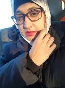
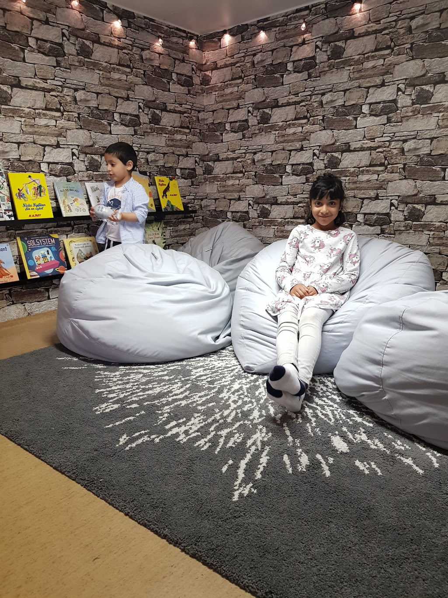
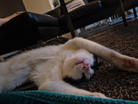

Om Mig

Hej! Jag heter Shazia Nasreen och jag bor i Malmö. Jag arbetar som personlig assistent och har pluggat som undersköterska. På min fritid tycker jag om att läsa böcker, lära mig nya språk och koda.
Min Familj

Familjen är kärnan i livet, där vi hittar trygghet, kärlek och glädje. Det är platsen där vi kan vara oss själva och alltid känna oss accepterade. Tillsammans delar vi stunder av skratt, sorg, och allt däremellan, vilket skapar minnen som varar livet ut. Familjen ger stöd i både medgång och motgång och visar oss vad äkta kärlek innebär – en kärlek som är villkorslös och växer varje dag. Det är i familjens värme vi finner styrka och glädje, och det är där vi alltid hör hemma.
Mina Barn

Mina fem barn, Meera, Abdul, Iqra, Ibrahim och Muhammad, fyller mitt liv med glädje och kärlek. Meera är omtänksam och kreativ, Abdul är full av energi och nyfikenhet. Iqra är lugn och klok, medan Ibrahim sprider skratt med sin busighet och humor. Muhammad, den yngsta, ger oss alla värme med sina kramar och sitt skratt. Tillsammans gör de varje dag speciell, och jag är så stolt och tacksam över att vara deras förälder.
Familjeaktiviteter

Som familj älskar vi att göra saker tillsammans. Några av våra favoritaktiviteter är att resa, gå på bio och vandra i naturen. Vi värdesätter verkligen vår tid tillsammans.
Min Katt

Vi har en underbar katt som heter Mimi, och han är verkligen en del av vår familj. Mimi är 2 år gammal, och vi älskar honom otroligt mycket. Han är alltid full av energi och bus, men också så kärleksfull och tillgiven. Oavsett om han jagar solstrålar eller ligger ihopkurad i knät, gör han varje dag lite bättre med sin närvaro. Vi kan inte föreställa oss livet utan vår kära Mimi.